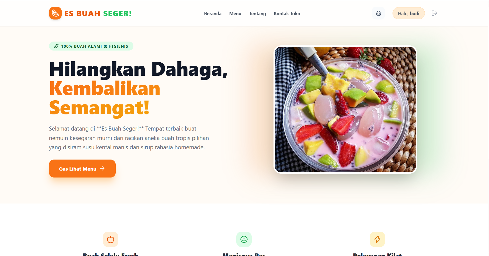
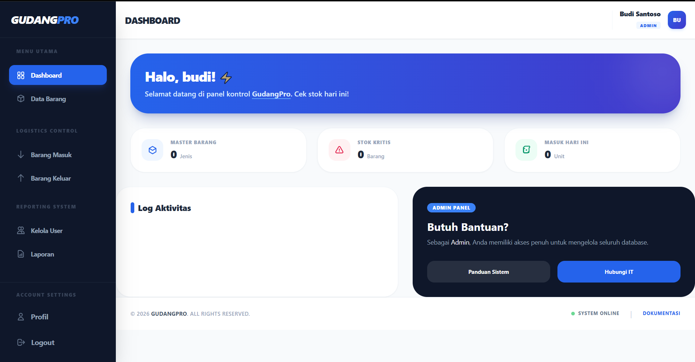

Halo, saya Reyhan. Siswa PPLG yang fokus menciptakan ekosistem web yang fungsional.
Halo! Saya adalah seorang pelajar jurusan Pengembangan Perangkat Lunak dan Gim (PPLG) yang memiliki minat dalam dunia pemrograman. Saya terbiasa bekerja secara mandiri maupun dalam tim, serta antusias mempelajari teknologi baru untuk mengembangkan kemampuan saya.
Fokus saya saat ini adalah mengembangkan website dan sistem yang sederhana, efisien, dan mudah digunakan (user-friendly). Di luar kegiatan sekolah, saya aktif belajar coding secara mandiri dan mengerjakan berbagai proyek kecil untuk meningkatkan keterampilan saya di bidang pemrograman.
3.65
Nilai Rata-rata
3+
Proyek Selesai
2tahun
Pengalaman Belajar
Pengembangan Perangkat Lunak & Gim (PPLG)
Pendidikan Sekolah Menengah Pertama
Sekolah Dasar
HTML & CSS
JavaScript
PHP
MySQL

Website e-commerce kuliner segar interaktif yang menyediakan pemesanan aneka es buah tropis dengan navigasi menu yang mudah.

Sistem manajemen inventori gudang berbasis web untuk memantau stok barang, melacak arus keluar-masuk, dan mengelola data log aktivitas secara real-time..